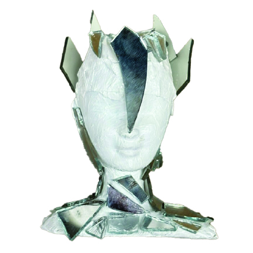
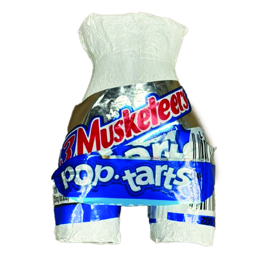
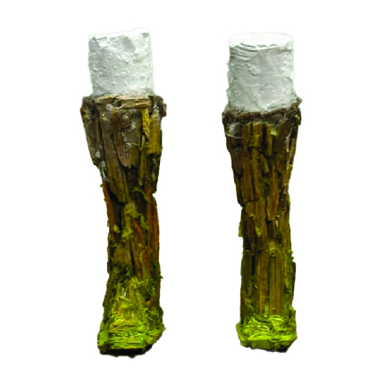

Top Image: Designer’s Dilemma
The designer dreamed of a stunning glass helmet that would look incredible but quickly ran into problems. Glass is gorgeous but fragile, making it a tough choice.

Middle Image: Style vs. Safety
They were torn between creating something eye-catching and ensuring it actually provides safety. A balancing act between aesthetics and functionality.

Bottom Image: The Final Decision
In the end, they had to decide what mattered more: style or safety. The challenge of the designer's dilemma lives on.